Workshop
Bayesian Inference
\[
p(\theta \mid y) = \frac{\mathcal{L}(\theta \mid y) \, p(\theta)}{p(y)}
\]
- \(p(\theta)\): Prior distribution
- \(\mathcal{L}(\theta \mid y)\): Likelihood
- \(p(\theta \mid y)\): Posterior distribution
Hierarchical Modeling
Are participants identical or fully independent?
Models group-level structure
each participant’s parameters ∼ drawn from a population distribution
Why Hierarchical Models?
- Reduces bias from unmodeled individual variability
- Prevents overfitting and underfitting
- Shrinkage: pulls extreme or low-quality estimates toward the group mean
EMC2
# # If not already done, install the EMC2 package
# remotes::install_github("ampl-psych/EMC2",ref="dev")
library(EMC2)Model Structure
The hierarchical model defines a joint posterior over all unknowns:
\[ p(\alpha_i, \mu, \Sigma \mid \text{data}) \propto p(\text{data} \mid \alpha_i) \cdot p(\alpha_i \mid \mu, \Sigma) \cdot p(\mu, \Sigma) \]
Likelihood:
\(p(\text{data} \mid \alpha_i)\)
— How well each participant’s data is explained by their parametersGroup-level model:
\(p(\alpha_i \mid \mu, \Sigma)\) — Individual parameters drawn from population distributionHyperprior:
\(p(\mu, \Sigma)\) — Prior beliefs over the group-level structure
Group-Level Parameters
Let \(n\) = number of individual parameters per subject:
\(\mu\): vector of population means
\(\Sigma\): symmetric covariance matrix, including:
Diagonal: Variances (\(\sigma^2\))
Off-diagonal: Covariances
\(\frac{n(n-1)}{2}\) elements total
Priors
Cognitive model parameters are transformed to have support on the entire real line, ensuring compatibility with the assumption of a normally distributed group-level prior.
Log transformation is applied to parameters that are strictly positive (e.g., non-decision time), preventing invalid negative values.
Probit transformation is used for parameters bounded between 0 and 1 (e.g., the starting point in the Drift Diffusion Model, which lies between the two response boundaries).
Consequently, prior distributions are defined on these transformed scales rather than on the natural parameter scales.
Design specification
The design function creates a design object that maps model parameters to experimental conditions using linear model formulas. This object specifies:
- Model type
- Formula: Linear models for estimated parameter types (default values are used for omitted types)
- Parameters to be fixed as constants (optional)
- Functions for creating custom factors (optional)
- Custom contrast coding for factors (optional)
Simulation
First. We construct a full-factorial data frame with all combinations of factors. These factors define the experimental design:
- CI: Congruency (“cong” or “inc”)
- GAP: Gap (“large” or “small”)
- S: Stimulus orientation (“left” or “right”)
- R: Response orientation (“left” or “right”)
- subjects: 40 participants
dat = expand.grid(
subjects = factor(1:40),
CI = factor(c("cong", "inc")),
GAP = factor(c("large", "small")),
S = factor(c("left", "right")),
R = factor(c("left", "right"))
)Note. Reserved factor names in EMC2 are:
- R: response factor
- rt: response time (numeric)
- subjects: participant IDs
We start by simulating some data using the Wiener Diffusion Model.
# See details of available parameters and transformations:
?DDMDesign object
The formula argument maps DDM parameters to experimental factors using R’s linear modeling syntax. Each parameter type gets its own formula. It is not necessary to specify formulas for all nine parameter types of the DDM. Any parameters not explicitly included in the formula argument will be assigned default values. Additionally, parameters included in the formula can be fixed to specific values using the constants argument.
We customized how drift rates are mapped to experimental conditions by modifying the contrasts argument in the design. Instead of the default treatment contrasts for the stimulus factor (S), we used a contrast that codes left stimuli as -1 and right stimuli as 1. This coding allows the intercept parameter v to reflect overall response bias: positive values indicate a bias toward rightward perception, and negative values indicate a bias toward leftward.
The v_Sdif parameter captures how the drift rate depends on the stimulus direction (left vs. right), using the same -1/1 coding. Higher values of v_Sdif indicate faster evidence accumulation toward the correct response.
Because we had no reason to expect congruency (CI) to affect response bias, we fixed the v_CIinc parameter, which would capture bias shifts between congruent and incongruent trials, to zero using the constants argument.
As a result, the model estimates four drift rate–related parameters:
v: overall bias (independent of stimulus)
v_Sdif: stimulus-driven drift modulation
v_Sdif:CIinc: interaction capturing how congruency affects the stimulus-dependent drift
Smat = matrix(c(-1,1), nrow = 2,dimnames=list(NULL,"dif"))
designWDDM = design(
model = DDM,
data = dat,
formula = list(
# Threshold (a) varies with GAP.
a ~ GAP, # The baseline (intercept) corresponds to "large".
# Drift rate (v) varies with CI
v ~ S*CI,
# Non-decision time (t0) and bias (Z) are estimated but
#constant across all conditions.
t0 ~ 1,
Z ~ 1),
contrasts = list(S = Smat),
constants=c(v_CIinc = 0)
)Parameter(s) s, st0, sv, SZ not specified in formula and assumed constant.
Sampled Parameters:
[1] "a" "a_GAPsmall" "v" "v_Sdif" "v_Sdif:CIinc"
[6] "t0" "Z"
Design Matrices:
$a
GAP a a_GAPsmall
large 1 0
small 1 1
$v
S CI v v_Sdif v_CIinc v_Sdif:CIinc
left cong 1 -1 0 0
left inc 1 -1 1 -1
right cong 1 1 0 0
right inc 1 1 1 1
$t0
t0
1
$Z
Z
1
$s
s
1
$st0
st0
1
$sv
sv
1
$SZ
SZ
1The design object shows which parameters will be estimated and how they map to the experimental design (the contrast matrices for each parameter type).
mapped_pars(designWDDM)$a
GAP
large : exp(a)
small : exp(a + a_GAPsmall)
$v
S CI
left cong : v - v_Sdif
left inc : v - v_Sdif + v_CIinc - v_Sdif:CIinc
right cong : v + v_Sdif
right inc : v + v_Sdif + v_CIinc + v_Sdif:CIincWe now simulate data from the model by specifying a vector of group-level means. These are defined on the transformed scale (log for positive, probit for bounded).
pmean_sim = c(
a = log(1.2), # baseline threshold
a_GAPsmall = log(1.1), # increase threshold
v = 0, # drift bias
v_Sdif = 1.1, # drift rate
'v_Sdif:CIinc' = 0.7, # increase drift
t0 = log(0.3), # non-decision time
Z = qnorm(0.5) # bias (0.5 on natural scale = unbiased)
)mapped_pars(designWDDM, p_vector = pmean_sim) CI GAP S v a sv t0 st0 s Z SZ z sz
1 cong large left -1.1 1.20 0 0.3 0 1 0.5 0 0.60 0
2 inc large left -1.8 1.20 0 0.3 0 1 0.5 0 0.60 0
3 cong small left -1.1 1.32 0 0.3 0 1 0.5 0 0.66 0
4 inc small left -1.8 1.32 0 0.3 0 1 0.5 0 0.66 0
5 cong large right 1.1 1.20 0 0.3 0 1 0.5 0 0.60 0
6 inc large right 1.8 1.20 0 0.3 0 1 0.5 0 0.60 0
7 cong small right 1.1 1.32 0 0.3 0 1 0.5 0 0.66 0
8 inc small right 1.8 1.32 0 0.3 0 1 0.5 0 0.66 0Note. log scale
Because a is estimated on a log scale adding an effect has a multiplicative effect on the natural scale. For example if \(a = log(1)\) and \(a_{GAPsmall} = log(1) = 0\), then the speed condition threshold is \(exp( log(1) + log(1) ) = 1 x 1 = 1\) (i.e, the same). Similarly if \(a_{GAPsmall} = log(1.5) = exp( log(1) + log(1.5) ) = 1.5\) (i.e., more).The model’s proposed evidence accumulation indicates that drift rates decrease in the incongruent condition, while the decision boundary increases when the gap is small.
plot_design(designWDDM,p_vector = pmean_sim,
factors = list(v = c("S", "CI"),
B = "GAP"),
plot_factor ="S")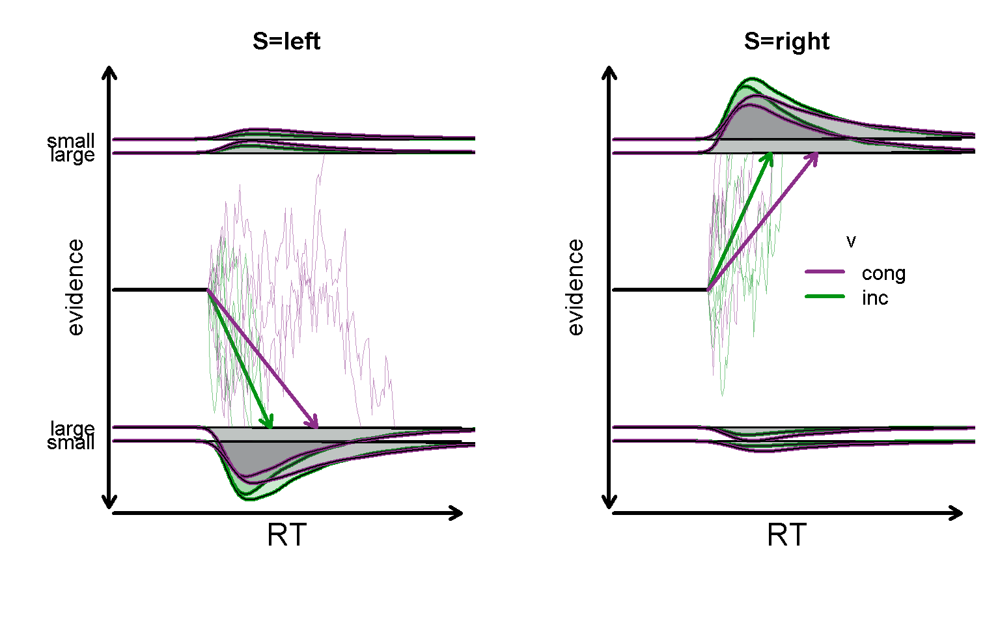
Generate subject-level parameters:
subj_pars = make_random_effects(
design = designWDDM,
group_means = pmean_sim,
variance_proportion = 0.2,
covariances = diag(0.1, length(pmean_sim))
)Simulate response time and choice data (50 trials per subject per condition):
simWDDM = make_data(subj_pars, designWDDM, n_trials = 50)
1 2 3 4 5 6 7 8 9 10 11 12 13 14 15 16 17 18 19 20
400 400 400 400 400 400 400 400 400 400 400 400 400 400 400 400 400 400 400 400
21 22 23 24 25 26 27 28 29 30 31 32 33 34 35 36 37 38 39 40
400 400 400 400 400 400 400 400 400 400 400 400 400 400 400 400 400 400 400 400 Check simulated data:
# Add accuracy column
simWDDM$acc = simWDDM$R == simWDDM$S
# Accuracy and RT by condition
aggregate(acc~GAP, simWDDM, FUN = mean)
aggregate(acc~CI, simWDDM, FUN = mean)
aggregate(rt~GAP, simWDDM, FUN = median)
aggregate(rt~CI, simWDDM, FUN = median)
# Plot RT distributions by factor
plot_density(simWDDM, adjust = 1.5, defective_factor = "GAP")
plot_density(simWDDM, adjust = 1.5, defective_factor = "CI") GAP acc
1 large 0.7995
2 small 0.8310 CI acc
1 cong 0.77425
2 inc 0.85625 GAP rt
1 large 0.5246711
2 small 0.5673353 CI rt
1 cong 0.5589868
2 inc 0.5335750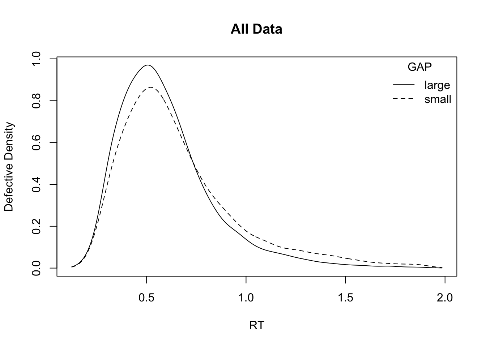
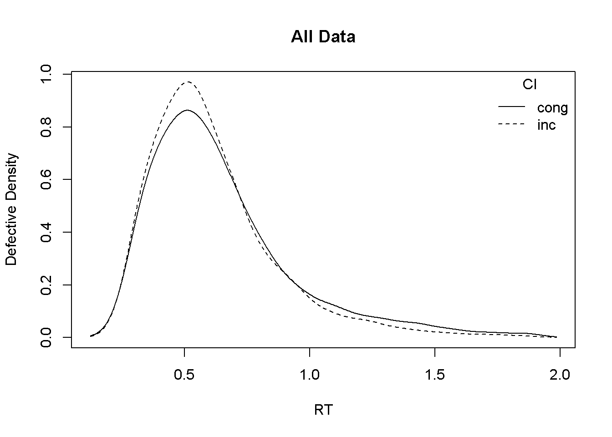
Fit the model to the simulated data
Prior specification:
# Define prior means (on transformed scale) for model fitting
pmean = pmean_sim
pmean["a_GAPsmall"] = log(1) # effect 0
pmean["v_Sdif:CIinc"] = log(1) # effect 0mapped_pars(designWDDM, p_vector = pmean) CI GAP S v a sv t0 st0 s Z SZ z sz
1 cong large left -1.1 1.2 0 0.3 0 1 0.5 0 0.6 0
2 inc large left -1.1 1.2 0 0.3 0 1 0.5 0 0.6 0
3 cong small left -1.1 1.2 0 0.3 0 1 0.5 0 0.6 0
4 inc small left -1.1 1.2 0 0.3 0 1 0.5 0 0.6 0
5 cong large right 1.1 1.2 0 0.3 0 1 0.5 0 0.6 0
6 inc large right 1.1 1.2 0 0.3 0 1 0.5 0 0.6 0
7 cong small right 1.1 1.2 0 0.3 0 1 0.5 0 0.6 0
8 inc small right 1.1 1.2 0 0.3 0 1 0.5 0 0.6 0Inspect and visualize the prior:
# Prior standard deviations (psd)
psd = sampled_pars(designWDDM, doMap = FALSE)
psd[1:length(pmean)] = c(.5, .5, 1, 1, 1, 0.5, 0.4)
# Prior object, type = "standard": hierarchical model with full covariance
priorWDDM=prior(designWDDM,
mu_mean=pmean,
mu_sd=psd,
type = "standard")
priorWDDMMean and variance of the prior on the transformed parameters:
a ~ 𝑁(0.18, 0.25)
a_GAPsmall ~ 𝑁(0, 0.25)
v ~ 𝑁(0, 1)
v_Sdif ~ 𝑁(1.1, 1)
v_Sdif:CIinc ~ 𝑁(0, 1)
t0 ~ 𝑁(-1.20, 0.25)
Z ~ 𝑁(0, 0.16)
For detailed info use summary(<prior>)summary(priorWDDM)mu - Group-level mean
mean of the group-level mean prior :
a a_GAPsmall v v_Sdif v_Sdif:CIinc t0
0.1823216 0.0000000 0.0000000 1.1000000 0.0000000 -1.2039728
Z
0.0000000
variance of the group-level mean prior :
a a_GAPsmall v v_Sdif v_Sdif:CIinc t0 Z
a 0.25 0.00 0 0 0 0.00 0.00
a_GAPsmall 0.00 0.25 0 0 0 0.00 0.00
v 0.00 0.00 1 0 0 0.00 0.00
v_Sdif 0.00 0.00 0 1 0 0.00 0.00
v_Sdif:CIinc 0.00 0.00 0 0 1 0.00 0.00
t0 0.00 0.00 0 0 0 0.25 0.00
Z 0.00 0.00 0 0 0 0.00 0.16
Sigma - Group-level covariance matrix
degrees of freedom on the group-level (co-)variance prior, 2 leads to uniform correlations. Single value :
[1] 2
scale on the group-level variance prior, larger values lead to larger variances :
a a_GAPsmall v v_Sdif v_Sdif:CIinc t0
0.3 0.3 0.3 0.3 0.3 0.3
Z
0.3 Carefully reviewing and visualizing the selected priors is highly important.
plot(priorWDDM, map = FALSE) # transformed scale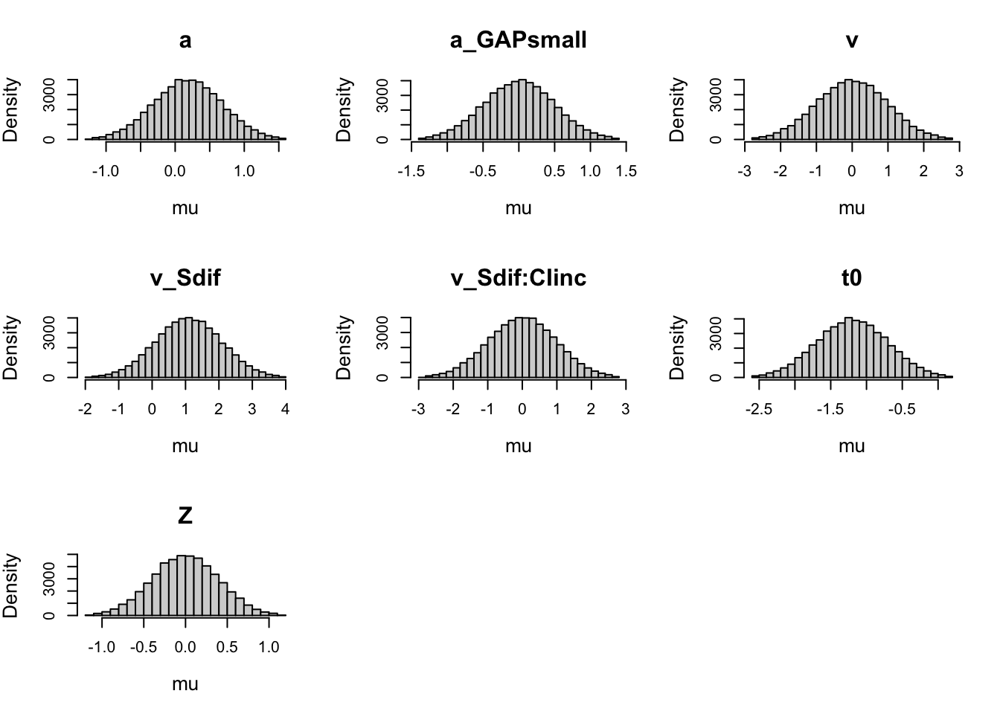
plot(priorWDDM) # natural scale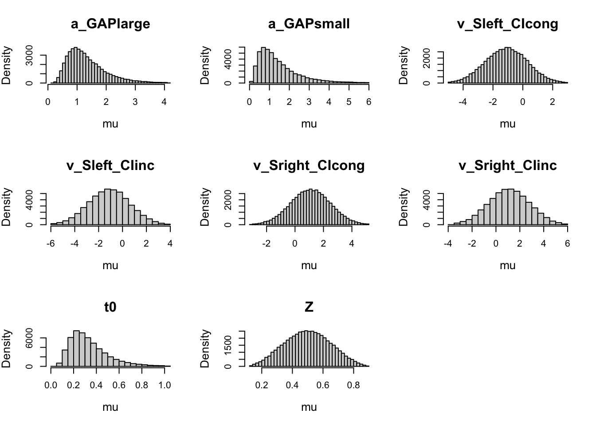
Note. Probit scale.
Always check prior on both transformed and natural scale
# Setting high sd for probit-transformed Z leads to a peaked prior (non-uniform)
psd1 = psd
psd1[7] = 4 # very wide spread
priorWDDM1 = prior(designWDDM, pmean = pmean, psd = psd1, type = "single")
plot(priorWDDM1, designWDDM, use_par = "Z")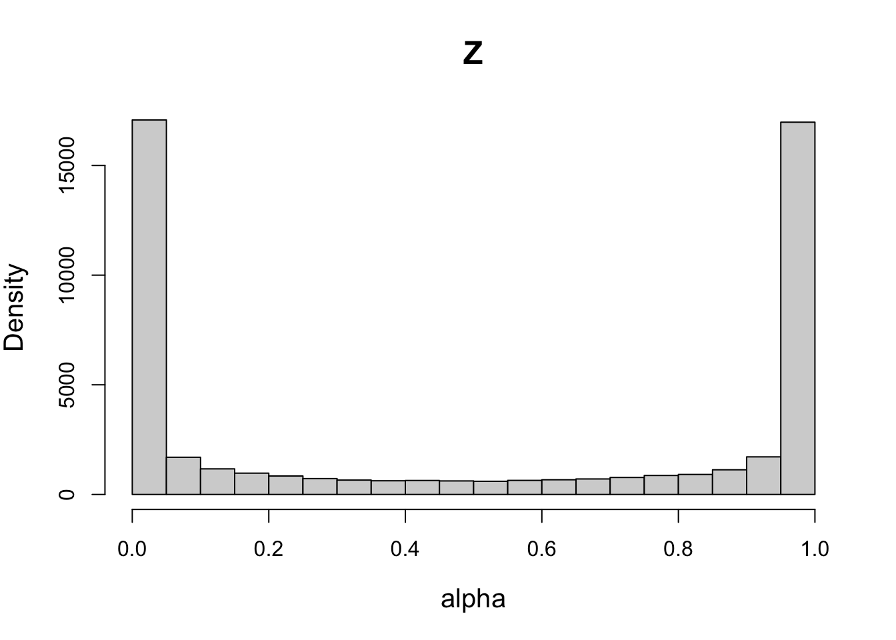
# Setting sd = 1 yields a uniform distribution on natural scale (Z ~ U(0,1))
psd1[7] = 1
priorWDDM1 = prior(designWDDM, pmean = pmean, psd = psd1, type = "single")
plot(priorWDDM1, designWDDM, use_par = "Z")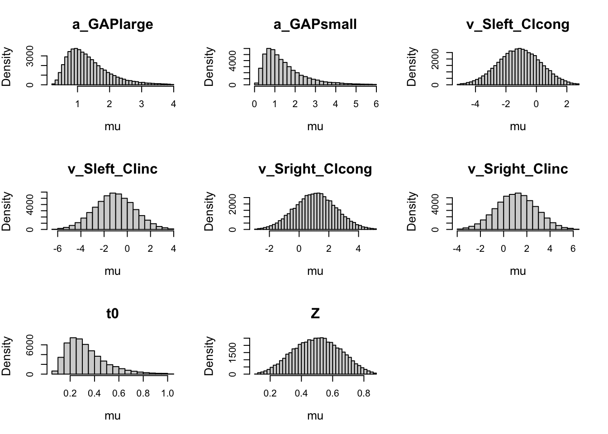
Run model
The make_emc() creates an emc object by combining the data, prior, and model specification into a emc object that is needed in fit()
?make_emc()
# Create MCMC samplers for model fitting
samplers = make_emc(simWDDM, designWDDM, prior = priorWDDM)Processing data set 1Likelihood speedup factor: 1.9 (8634 unique trials)Note. rt_resolution
By default, rt_resolution = 0.02, which corresponds to a typical experimental setup using a 50Hz monitor without synchronization to screen refresh. This improves computational efficiency by calculating the likelihood only once for each unique combination of parameters and discretized response times (at the specified resolution), rather than for every trial individually. The resulting speedup and the number of unique trials retained after this compression are reported automatically.hWDDM=fit(samplers,verbose=TRUE, iter = 2000,
cores_per_chain = 3,fileName = "fits/tmpWDDM.RData")Running preburn stage1: Iterations preburn = 50Running burn stage1: Iterations burn = 100Mean Rhat = 1.034Running adapt stage1: Iterations adapt = 100Enough unique values detected: 150Testing proposal distribution creationSuccessfully adapted - stopping adaptationRunning sample stage1: Iterations sample = 100Max Rhat = 1.0672: Iterations sample = 200Max Rhat = 1.0363: Iterations sample = 300Max Rhat = 1.0234: Iterations sample = 400Max Rhat = 1.0765: Iterations sample = 500Max Rhat = 1.0546: Iterations sample = 600Max Rhat = 1.0467: Iterations sample = 700Max Rhat = 1.0368: Iterations sample = 800Max Rhat = 1.0319: Iterations sample = 900Max Rhat = 1.02310: Iterations sample = 1000Max Rhat = 1.01911: Iterations sample = 1100Max Rhat = 1.01712: Iterations sample = 1200Max Rhat = 1.01513: Iterations sample = 1300Max Rhat = 1.01314: Iterations sample = 1400Max Rhat = 1.01115: Iterations sample = 1500Max Rhat = 1.0116: Iterations sample = 1600Max Rhat = 1.00917: Iterations sample = 1700Max Rhat = 1.00718: Iterations sample = 1800Max Rhat = 1.00619: Iterations sample = 1900Max Rhat = 1.00620: Iterations sample = 2000Max Rhat = 1.006Time difference of 4.142872 minssave(hWDDM,file="fits/WDDM.RData")batch mode option
Because hierarchical model sampling can be time-consuming, we typically avoid launching the fitting process directly from the console. Instead, we use batch mode to manage and run long sampling jobs more reliably.
Step 1: Save the sampler object
First, save the emc sampler object to disk. It’s best to store this in a subdirectory dedicated to model fits, for example, fits/WDDM.RData for the DDM model.
save(samplers, file = "fits/WDDM.RData")Step 2: Create a batch script
Next, create a separate R script (e.g., runWDDM.R) in the same directory. This script should contain the fitting commands:
library(EMC2)
load("WDDM.RData")
hWDDM = fit(samplers,verbose=TRUE, iter = 2000,
cores_per_chain = 3,fileName = "tmpWDDM.RData")
save(hWDDM,file="WDDM.RData")The fileName argument ensures that progress is saved after each fitting cycle, preventing loss in case of interruption.
cores_per_chain allows parallel sampling across multiple cores (only on macOS and Linux). With 3 chains and 3 cores per chain, a total of 9 cores will be used.
Step 3: Run the script from the terminal In RStudio, open a terminal via Terminal > New Terminal, navigate to the relevant directory:
cd ~/eam-workshop/fitsThen run the batch script:
nohup R CMD BATCH runWDDM.R &nohup (“no hangup”) ensures the fitting continues even if the terminal is closed. (To kill run kill process_ID_number)
& runs the process in the background, so you can continue using the terminal.
Step 4: Monitor progress
All console output will be saved to runWDDM.Rout. You can open this file while sampling is ongoing to monitor progress.
Load fitted model
This command loads the previously saved sampler results from a .RData file. This is useful when fitting was done in batch mode and you want to inspect the results.
print(load("fits/WDDM.RData"))[1] "hWDDM"Check convergence and summarize parameter estimates
The check() function displays convergence diagnostics such as R-hat values, highlighting parameters that may not have fully converged.
check(hWDDM, selection = "mu") # Show the worst convergence diagnosticsIterations:
preburn burn adapt sample
[1,] 0 0 0 2000
[2,] 0 0 0 2000
[3,] 0 0 0 2000
mu
a a_GAPsmall v v_Sdif v_Sdif:CIinc t0 Z
Rhat 1 1 1.001 1.002 1.001 1 1.001
ESS 6000 5696 4082.000 3533.000 2762.000 6259 5639.000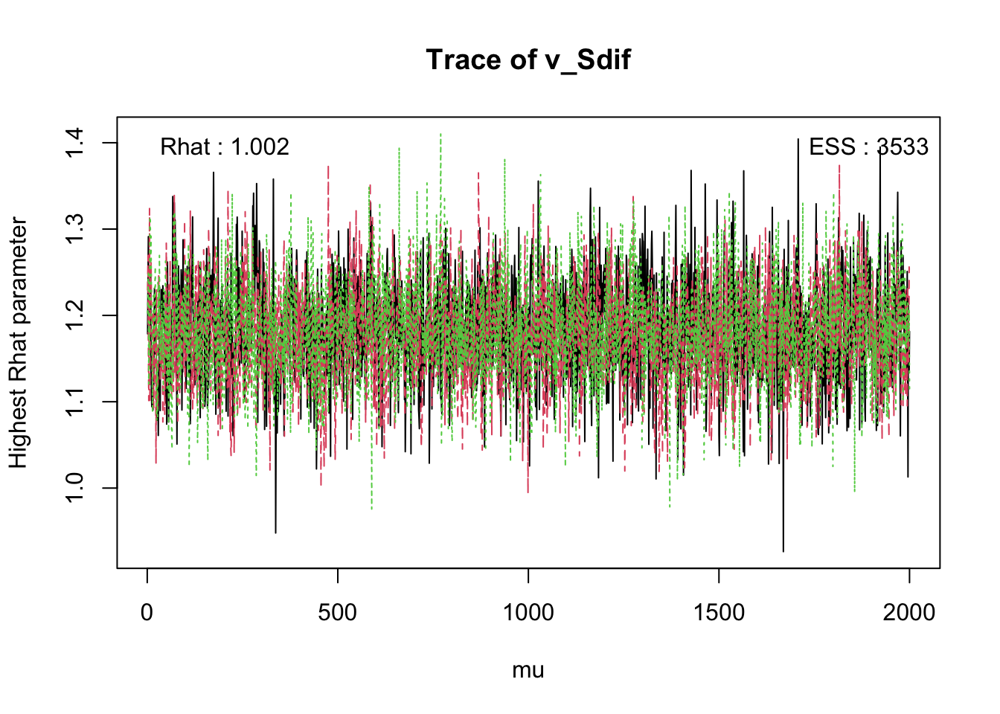
You can also check the correlation between parameters with the function pairs_posterior().
pairs_posterior(hWDDM, selection = "mu")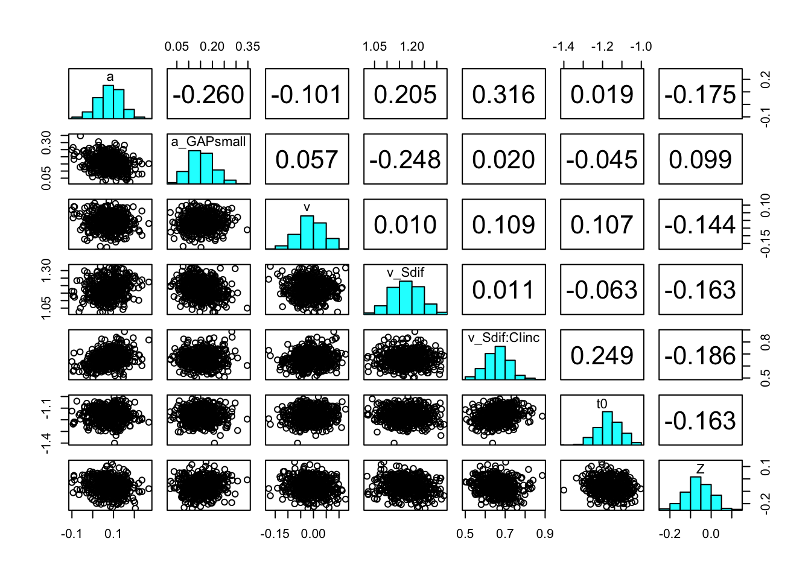
The summary() function provides posterior summaries for all parameters (e.g., mean, SD, quantiles).
summary(hWDDM)
mu
2.5% 50% 97.5% Rhat ESS
a -0.026 0.083 0.193 1.000 6000
a_GAPsmall 0.052 0.152 0.252 1.000 5696
v -0.104 -0.007 0.090 1.001 4082
v_Sdif 1.069 1.181 1.295 1.002 3533
v_Sdif:CIinc 0.536 0.659 0.784 1.001 2762
t0 -1.288 -1.168 -1.044 1.000 6259
Z -0.182 -0.063 0.053 1.001 5639
sigma2
2.5% 50% 97.5% Rhat ESS
a 0.079 0.121 0.199 1.000 4882
a_GAPsmall 0.065 0.100 0.162 1.000 4822
v 0.042 0.073 0.130 1.001 2717
v_Sdif 0.064 0.108 0.188 1.002 2785
v_Sdif:CIinc 0.055 0.104 0.195 1.001 1622
t0 0.101 0.154 0.247 1.001 5352
Z 0.096 0.146 0.237 1.000 4701
alpha 1
2.5% 50% 97.5% Rhat ESS
a 0.506 0.583 0.666 1.000 5826
a_GAPsmall -0.105 -0.019 0.062 1.001 5963
v 0.182 0.349 0.522 1.000 5234
v_Sdif 0.963 1.139 1.315 1.000 4657
v_Sdif:CIinc 0.463 0.706 0.944 1.000 4461
t0 -1.398 -1.314 -1.249 1.000 5785
Z -0.094 -0.009 0.072 1.000 5719The plot_pars() help inspect parameter estimates across conditions and assess sampling performance.
plot_pars(hWDDM, layout = c(2, 4))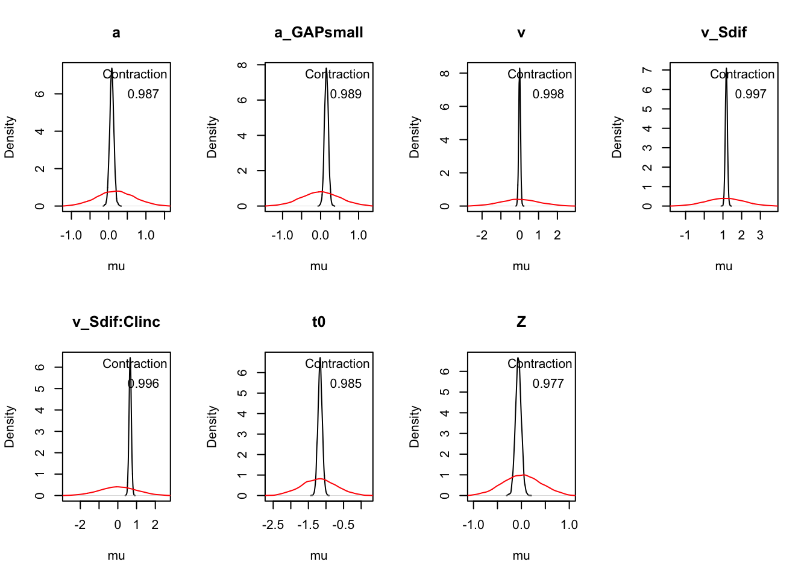
# map = TRUE, natural scale (not transformed)
plot_pars(hWDDM, layout = c(2, 4), use_prior_lim = FALSE, map = TRUE) 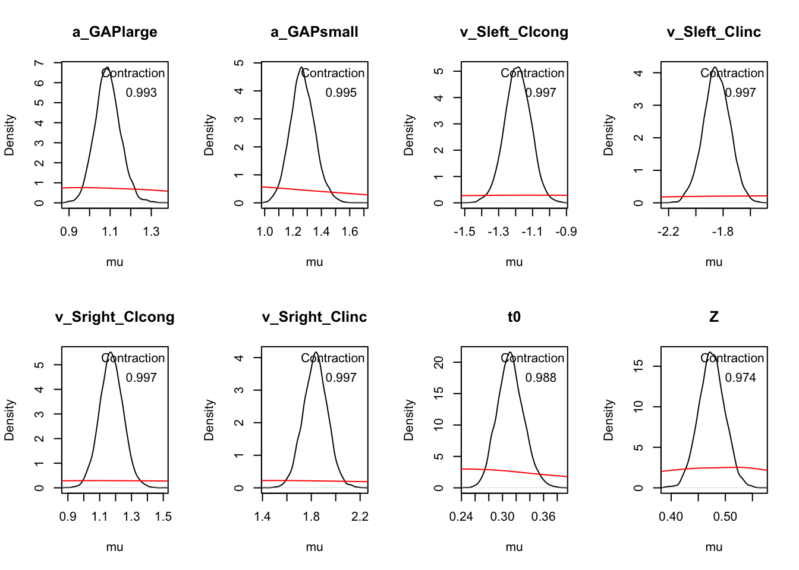
Posterior predictive checks
Posterior predictive checks are a key part of model validation, helping us assess how well the model can reproduce the observed data. By using the predict() function, we can simulate data from the model using the posterior samples, which can then be compared to the observed data.
ppWDDM = predict(hWDDM, n_cores = 4)Plot cumulative distribution functions (CDFs) and density plots for model predictions, split by conditions defined by the factors GAP and CI.
plot_cdf(simWDDM, ppWDDM, defective_factor = "GAP")
plot_density(simWDDM, ppWDDM, defective_factor = "GAP")
plot_cdf(simWDDM, ppWDDM, defective_factor = "CI")
plot_density(simWDDM, ppWDDM, defective_factor = "CI")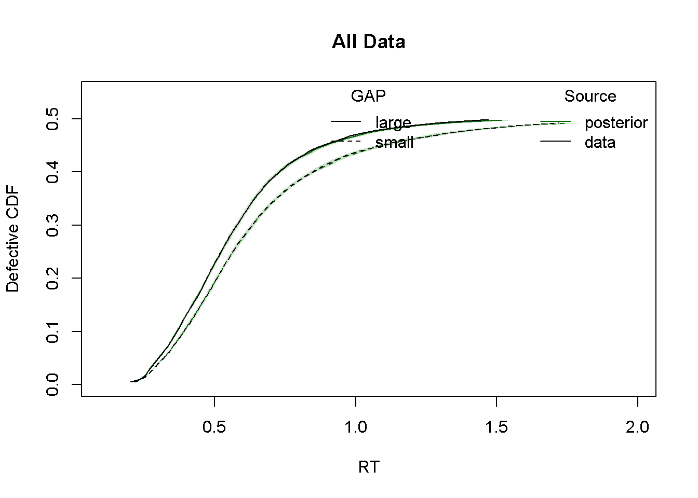
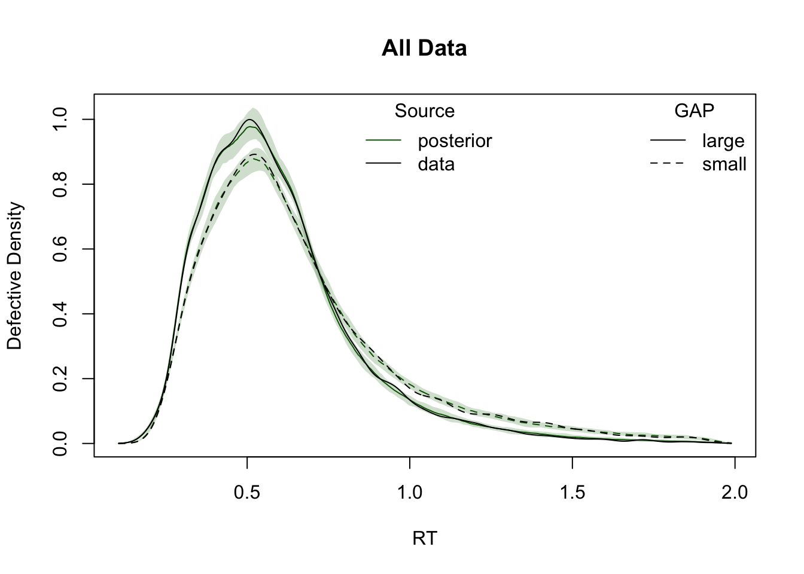
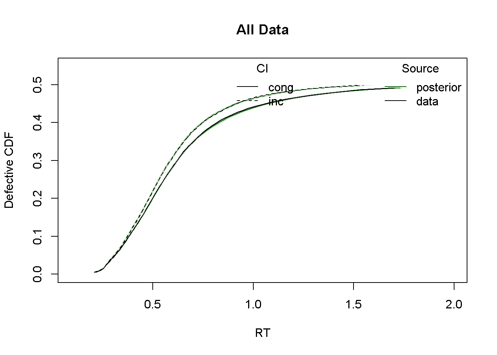
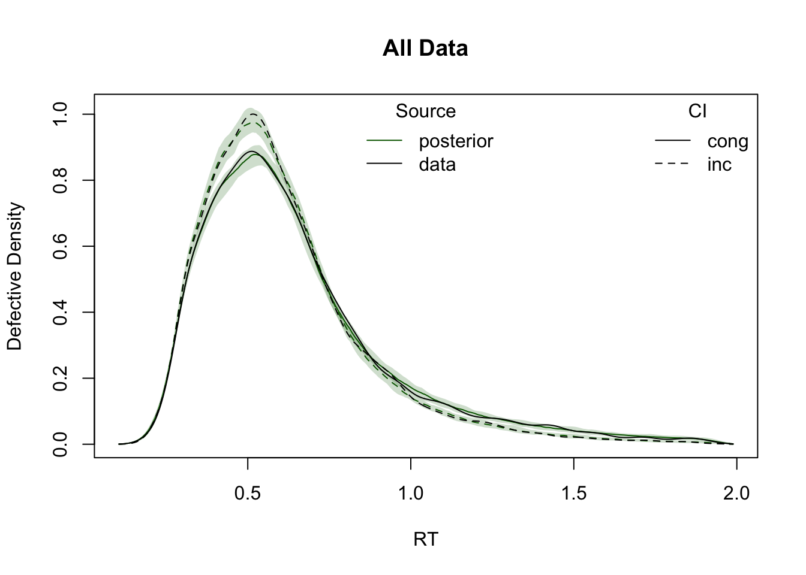
Let’s take a closer look at key statistics to evaluate the model fit in more detail.
Accuracy is well-predicted across all conditions, consistently falling within the 95% credible intervals of the posterior predictive distributions:
pc=function(d) 100 * mean(d$S == d$R)
plot_stat(
simWDDM, ppWDDM,
factors = c("GAP", "CI"),
layout = c(2, 2),
stat = pc,
stat_name = "Accuracy (%)"
)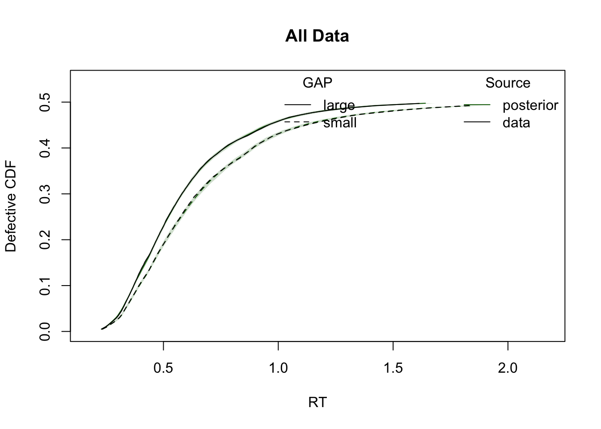
The median RT for correct responses is also accurately predicted, closely aligning with the observed data across conditions:
plot_stat(
simWDDM, ppWDDM,
factors = c("GAP", "CI"),
layout = c(2, 2),
stat = function(d) median(d$rt[d$R == d$S]),
stat_name = "Median Correct RT (s)"
)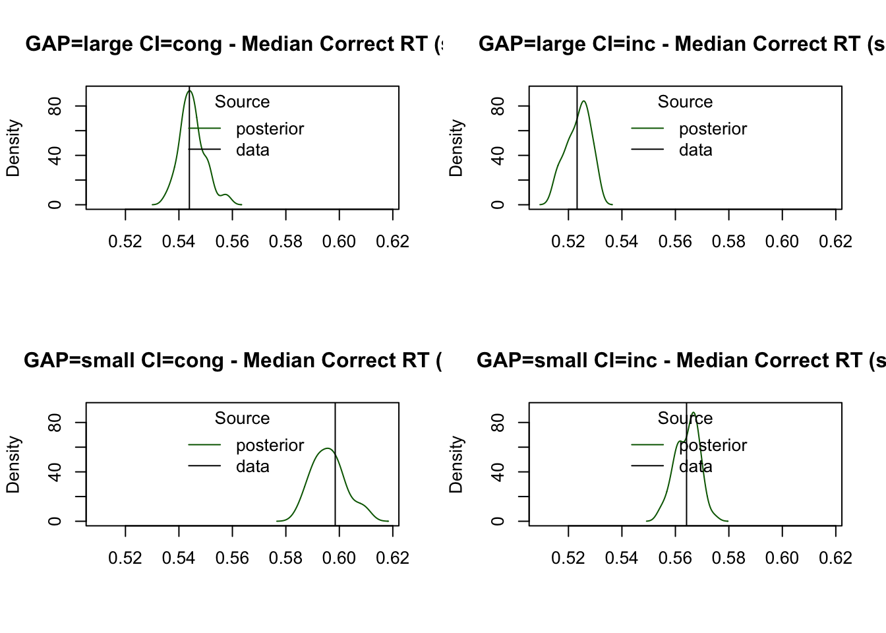
The model captures the variability in RTs for correct responses effectively, as shown by the predicted standard deviation:
plot_stat(
simWDDM, ppWDDM,
factors = c("GAP", "CI"),
layout = c(2, 2),
stat = function(d) sd(d$rt[d$R == d$S]),
stat_name = "Sd of correct RT (s)"
)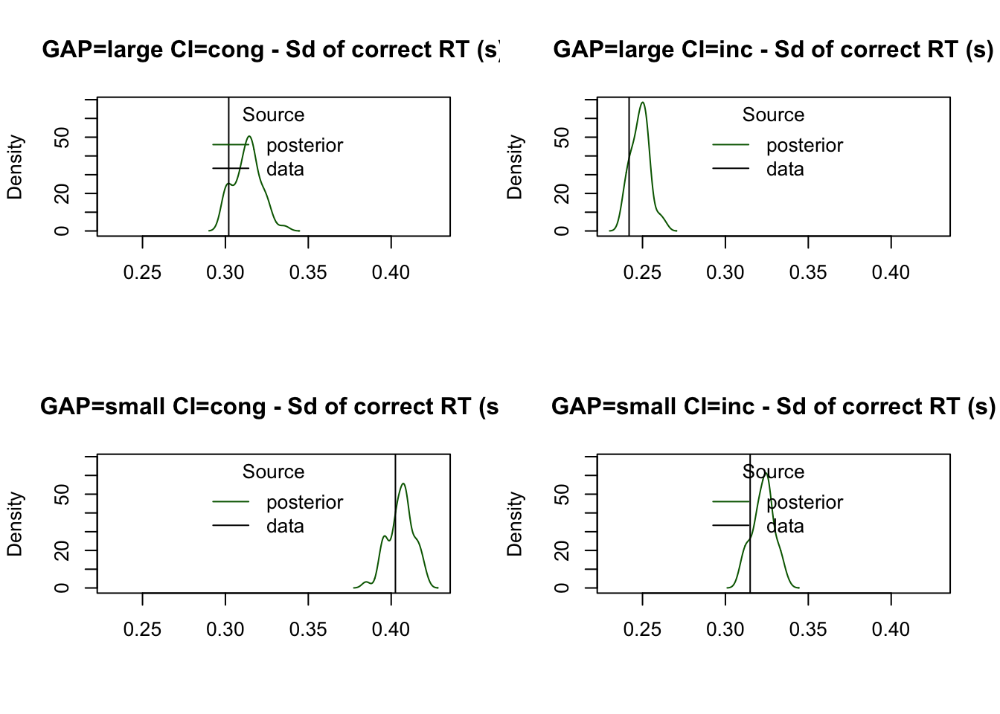
Finally, the model provides a reasonable estimate of the median RT for incorrect responses, despite fewer observations in these trials:
plot_stat(
simWDDM, ppWDDM,
factors = c("GAP", "CI"),
layout = c(2, 2),
stat = function(d) median(d$rt[d$R != d$S]),
stat_name = "Median Incorrect RT (s)"
)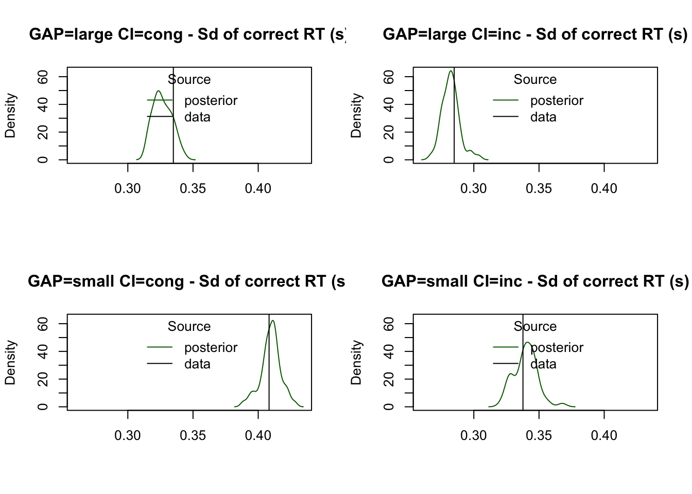
Parameter recovery
Parameter recovery is another critical diagnostic step in validating models. It helps answer the fundamental question:
Can the model accurately estimate the true underlying parameters that generated the data?
- Model validity: Good recovery indicates that the model structure is appropriate and that the parameters are identifiable.
- Inference reliability: If a model fails to recover known parameters, its estimates from real data may also be misleading or biased.
- Design evaluation: Recovery can reveal whether certain experimental conditions or parameter settings are insufficient to constrain the model.
We begin by evaluating the overall recovery:
true_pars = pmean_sim
recovery(hWDDM, true_pars = true_pars)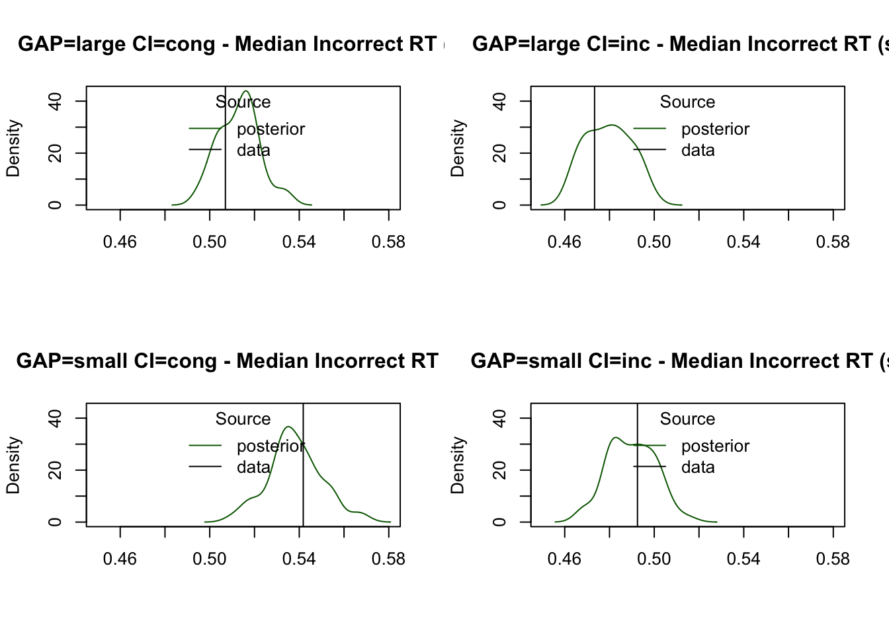
To visualize the accuracy of parameter estimation, we plot the posterior means against the true values for each parameter. A strong recovery is indicated by points clustering around the diagonal:
plot_pars(hWDDM, layout = c(2, 5), true_pars = true_pars,
use_prior_lim = FALSE, plot_prior = FALSE)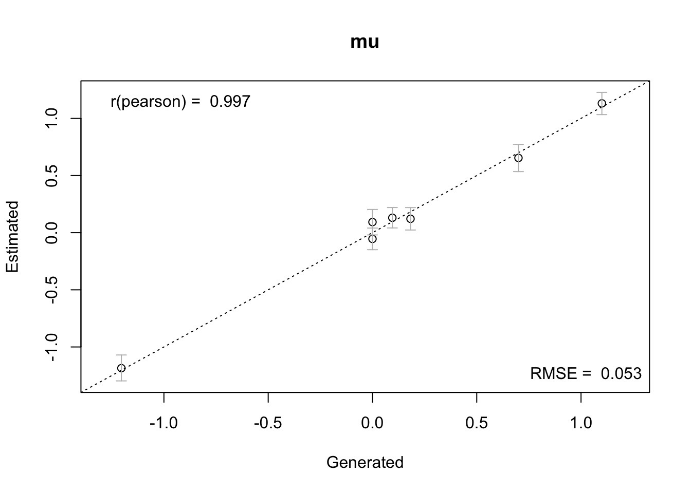
Next, we evaluate coverage, which checks whether the true parameter values fall within the 95% credible intervals of the posterior distributions.
recovery(hWDDM, true_pars = subj_pars,
do_CI = TRUE, stat = "coverage", selection = "alpha")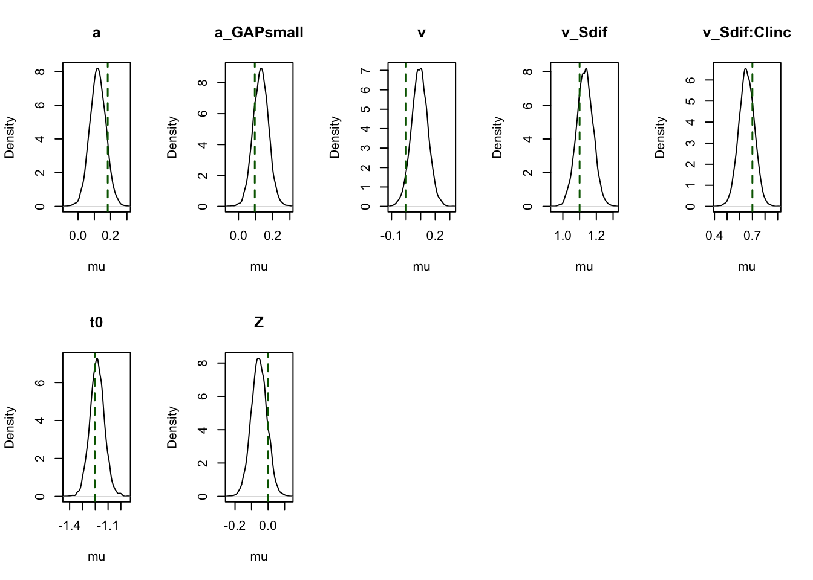
Good recovery provides trustworthy inferences!
Posterior Testing
Once the checks are performed, we can investigate hypotheses about specific parameters using their posterior distributions. The parameters() function extracts posterior samples, which can then be used for various forms of inference:
post = parameters(hWDDM)Posterior samples provide a flexible foundation for testing directional hypotheses, computing credible intervals, and evaluating evidence against specific null values.
Posterior Probability. A simple and intuitive use of the posterior is to compute the proportion of samples supporting a directional hypothesis. For example:
mean(post$a_GAPsmall > 0)[1] 0.997credible(hWDDM, "a_GAPsmall", alternative = "greater") a_GAPsmall mu
2.5% 0.05 NA
50% 0.15 0
97.5% 0.25 NA
attr(,"greater")
[1] 0.997This tells us the posterior probability that a_GAPsmall is greater than 0.
Credible intervals and null value testing. To formally assess uncertainty and determine whether an effect is credibly different from a specific value (e.g., zero), we can compute credible intervals. The credible() function reports whether the 95% credible interval includes the null value (mu = 0).
credible(hWDDM, "a_GAPsmall", mu = 0) a_GAPsmall mu
2.5% 0.05 NA
50% 0.15 0
97.5% 0.25 NA
attr(,"less")
[1] 0.003Bayes factor. To quantify the evidence for or against the null hypothesis, we can compute a Bayes factor. This tests whether the data shifts the belief away from the prior (evidence against the null).
hypothesis(hWDDM, "a_GAPsmall", selection = "mu", map = FALSE)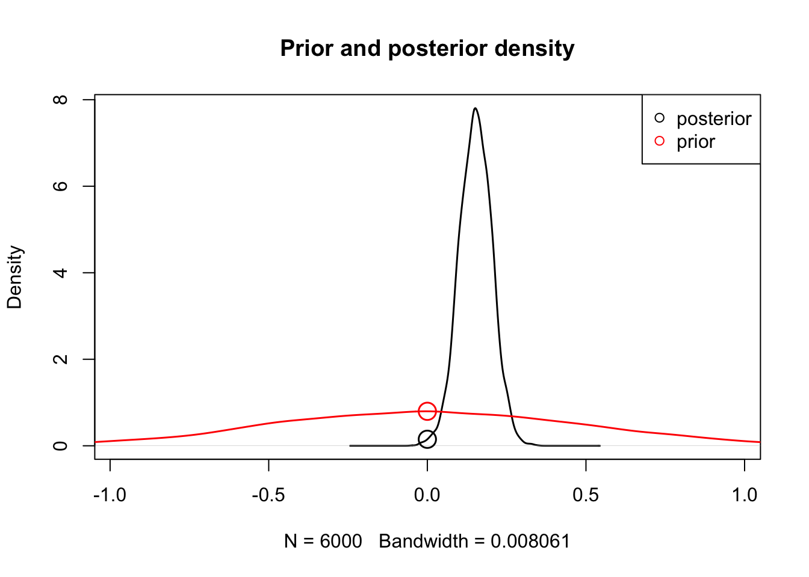
[1] 5.300889Racing Diffusion Model (RDM)
In race models, each possible response is represented by a separate accumulator, and each accumulator has its own parameters. To help structure the model, the design function includes an argument called Rlevels, which automatically defines a latent response factor (lR) that indexes each accumulator according to its associated response (e.g., left or right).
Race models require identifying which accumulator corresponds to the correct response for each trial. This is done using the matchfun argument, which takes a function that compares the stimulus and response labels.
For simple designs, where the stimulus factor (S) and response factor (lR) have the same levels, the matchfun looks like this:
matchfun=function(d)d$S==d$lRThis function returns TRUE when the accumulator corresponds to the correct response for a given stimulus.
Using matchfun, the model creates a new factor called lM (latent match), which distinguishes:
- matching accumulators: those representing the correct response
- mismatching accumulators: those representing the incorrect response
This allows us to estimate different drift rates for correct vs. incorrect responses, which is crucial for modeling decision accuracy.
To make interpretation easier, drift rates are often reparameterized using:
- An average (intercept) across accumulators
- A difference (dif) between matching and mismatching accumulators
This is done by applying a contrast matrix to the lM factor, typically:
ADmat=matrix(c(-1/2,1/2),ncol=1,dimnames=list(NULL,"dif")); ADmat dif
[1,] -0.5
[2,] 0.5In this parameterization, the intercept represents the overall drift rate, typically interpreted as a measure of decision urgency or stimulus strength. The v_lMdif parameter captures the difference in drift rates between matching and mismatching accumulators, reflecting how well the participant can discriminate between correct and incorrect responses.
This contrast coding is also applied to the congruence effect (CI). Specifically, we estimate v_lMdif:CIdif as the effect of congruency on drift quality, while fixing CIdif, the effect of congruency on the overall drift rate, to zero using the constant argument.
All parameters in the RDM are positive and estimated on the log scale. As in the DDM, within-trial variability is fixed to 1. We use a simplified RDM variant in which starting point variability (A) is fixed to zero.
designRDM=design(data=simWDDM,model=RDM,
formula=list(B~GAP+lR,
v~lM*CI,
t0~1),
matchfun=function(d)d$S==d$lR,
contrasts=list(lM=ADmat,
CI=ADmat),
constants = c(v_CIdif=0))Parameter(s) A, s not specified in formula and assumed constant.
Sampled Parameters:
[1] "B" "B_GAPsmall" "B_lRright" "v"
[5] "v_lMdif" "v_lMdif:CIdif" "t0"
Design Matrices:
$B
GAP lR B B_GAPsmall B_lRright
large left 1 0 0
large right 1 0 1
small left 1 1 0
small right 1 1 1
$v
lM CI v v_lMdif v_CIdif v_lMdif:CIdif
TRUE cong 1 0.5 -0.5 -0.25
FALSE cong 1 -0.5 -0.5 0.25
TRUE inc 1 0.5 0.5 0.25
FALSE inc 1 -0.5 0.5 -0.25
$t0
t0
1
$A
A
1
$s
s
1Prior specification
As in previous analyses, we expect a higher threshold for participants anticipating a small gap, reflecting increased caution. Accuracy is also expected to be above chance, indicated by v_lMdif being well above log(1). Finally, we anticipate an increase in drift rate quality as a function of incongruency (i.e., v_lMdif:CIdif), reflecting greater discrimination during incongruent trials.
pmean = c(
B = log(2), # baseline threshold
B_GAPsmall = log(1.2), # increase threshold
B_lRright=log(1), #left vs. right bias
v = log(2.5), # the average rate
v_lMdif = log(3), # v_lMd is the average quality
'v_lMdif:CIdif' = log(1.5), # the incongruent condition effect on quality
t0 = log(0.25) # non-decision time
)
mapped_pars(designRDM, p_vector = pmean) CI GAP S lR lM v B A t0 s b
1 cong large left left TRUE 3.913 2.0 0 0.25 1 2.0
2 cong large left right FALSE 1.597 2.0 0 0.25 1 2.0
3 inc large left left TRUE 4.792 2.0 0 0.25 1 2.0
4 inc large left right FALSE 1.304 2.0 0 0.25 1 2.0
5 cong small left left TRUE 3.913 2.4 0 0.25 1 2.4
6 cong small left right FALSE 1.597 2.4 0 0.25 1 2.4
7 inc small left left TRUE 4.792 2.4 0 0.25 1 2.4
8 inc small left right FALSE 1.304 2.4 0 0.25 1 2.4
9 cong large right left FALSE 1.597 2.0 0 0.25 1 2.0
10 cong large right right TRUE 3.913 2.0 0 0.25 1 2.0
11 inc large right left FALSE 1.304 2.0 0 0.25 1 2.0
12 inc large right right TRUE 4.792 2.0 0 0.25 1 2.0
13 cong small right left FALSE 1.597 2.4 0 0.25 1 2.4
14 cong small right right TRUE 3.913 2.4 0 0.25 1 2.4
15 inc small right left FALSE 1.304 2.4 0 0.25 1 2.4
16 inc small right right TRUE 4.792 2.4 0 0.25 1 2.4We can visualize the assumed model via the plot_design() function:
plot_design(designRDM, p_vector = pmean,
factors = list(v = c("S", "CI"),
B = "GAP"),
plot_factor = "S")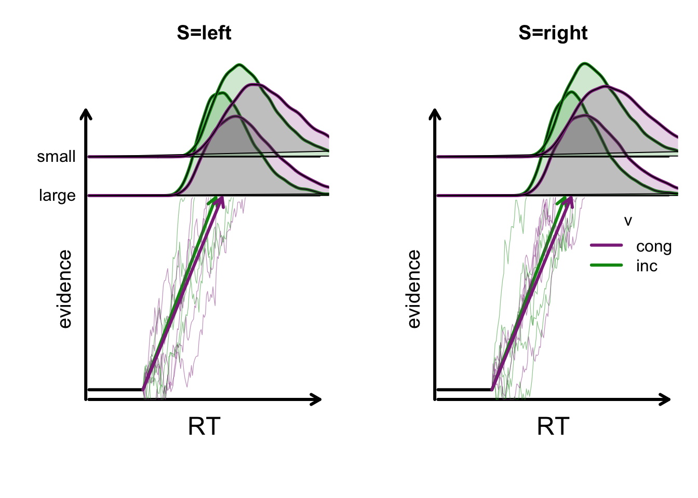
Set the prior on the effect to zero before model fitting:
pmean['B_GAPsmall'] = log(1)
pmean['v_lMdif:CIdif'] =log(1)
psd=c(1,1,1,1,1,1,.7)
priorRDM=prior(designRDM,
mu_mean=pmean,
mu_sd=psd,
type = "standard")Run model
samplers = make_emc(simWDDM, designRDM, prior = priorRDM)Processing data set 1Likelihood speedup factor: 1.9 (8634 unique trials)hRDM=fit(samplers,verbose=FALSE, iter = 2000,cores_per_chain = 3,
fileName = "fits/tmpRDM.RData")
save(hRDM,file="fits/RDM.RData")print(load("fits/RDM.RData"))[1] "hRDM"Check convergence and summarize parameter estimates
check(hRDM,selection = "mu") Iterations:
preburn burn adapt sample
[1,] 0 0 0 2000
[2,] 0 0 0 2000
[3,] 0 0 0 2000
mu
B B_GAPsmall B_lRright v v_lMdif v_lMdif:CIdif t0
Rhat 1 1 1.001 1.003 1.003 1.002 1.001
ESS 5071 5136 5637.000 1882.000 1761.000 2130.000 5366.000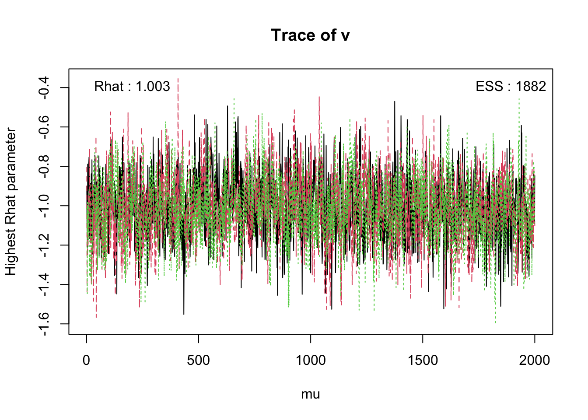
pairs_posterior(hRDM,selection = "mu")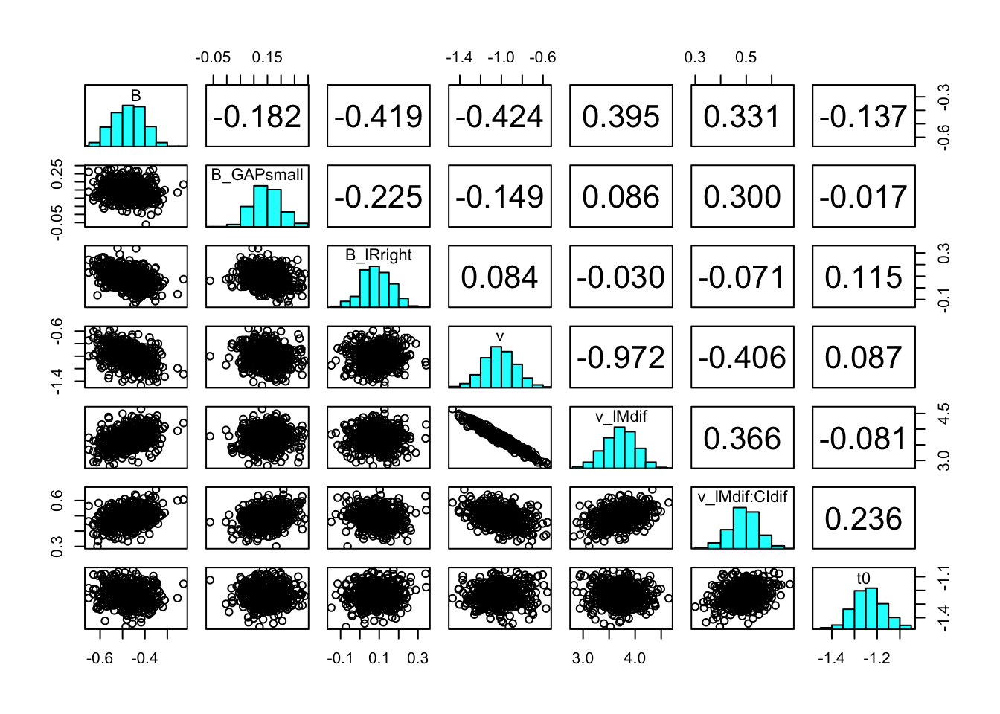
These plots help inspect parameter estimates.
plot_pars(hRDM, layout = c(2, 4))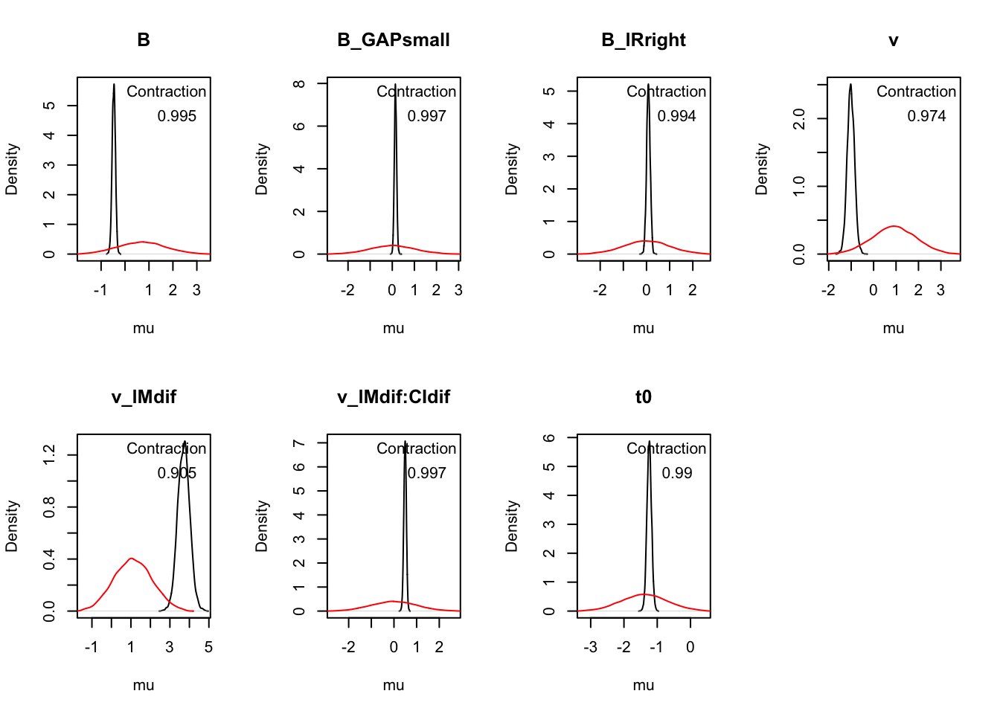
plot_pars(hRDM, layout = c(2, 5), use_prior_lim = FALSE, map = TRUE)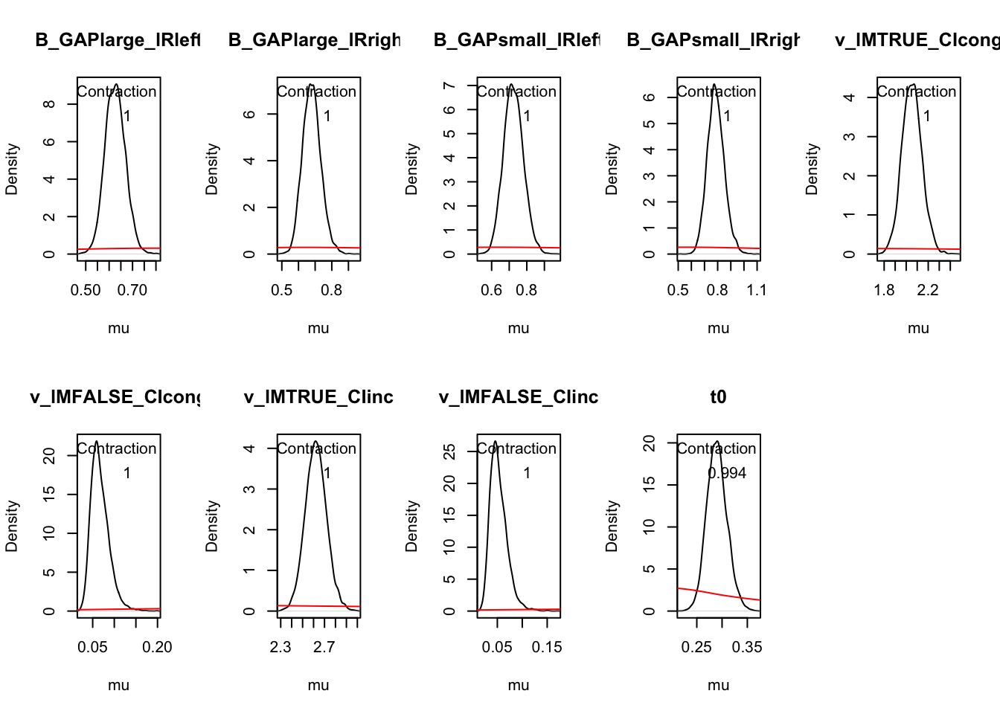
Compare WDDM and RDM
We compare the WDDM and RDM based on predicted vs. observed response times. The data were simulated under the WDDM model, so we expect it to yield a better fit.
ppRDM = predict(hRDM, n_cores = 4)Visual Comparison: CDF and Density Plots
The plots below show cumulative distribution functions (CDFs) and probability density functions (PDFs) for observed vs. predicted response times. Comparisons are split by two experimental factors: GAP and CI.
plot_cdf(simWDDM,list(DDM = ppWDDM,RDM = ppRDM),
defective_factor = "GAP")
plot_density(simWDDM,list(DDM = ppWDDM,RDM = ppRDM), defective_factor = "GAP")
plot_cdf(simWDDM,list(DDM = ppWDDM,RDM = ppRDM), defective_factor = "CI")
plot_density(simWDDM,list(DDM = ppWDDM,RDM = ppRDM), defective_factor = "CI")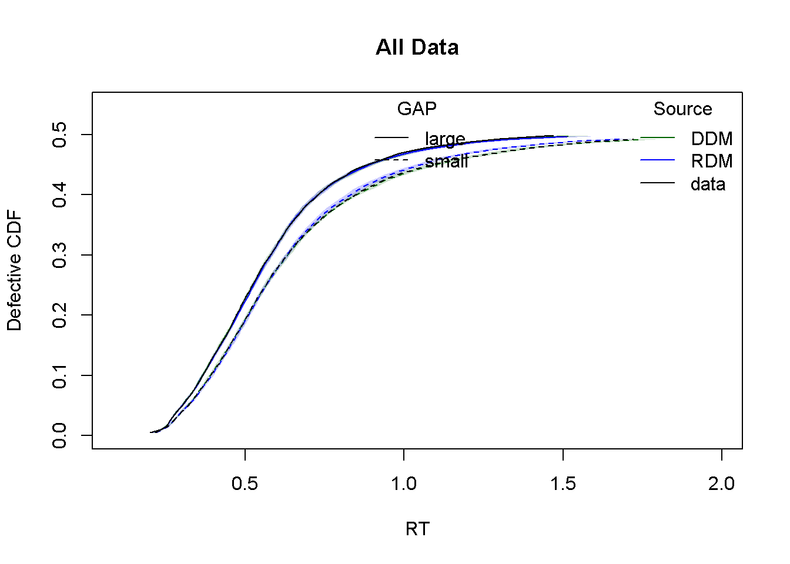
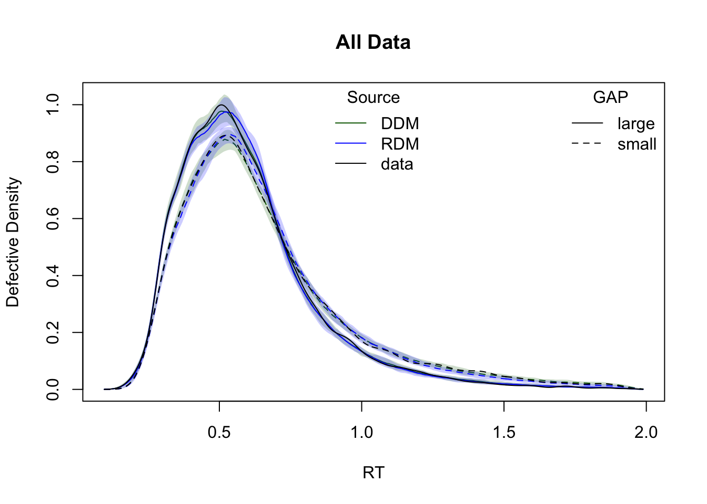
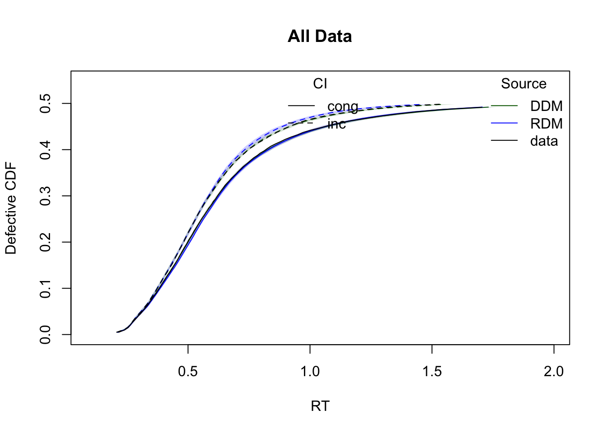
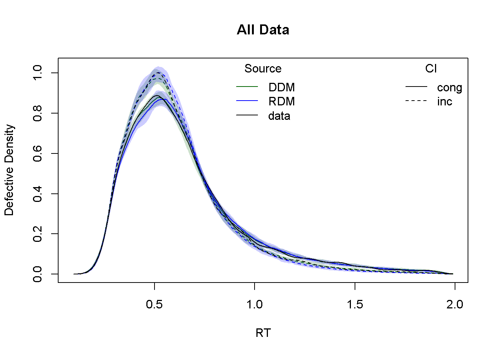
Model comparison metrics
We use model selection criteria provided by EMC2 to assess model fit:
- DIC (Deviance Information Criterion) and
- BPIC (Bayesian Predictive Information Criterion) balance fit and complexity; BPIC penalizes complexity more strongly, thus tending to prefer simpler models.
- MD (Marginal Deviance) is sensitive to prior specification and is used to compute Bayes Factors.
compare(list(WDDM = hWDDM, RDM = hRDM)) MD wMD DIC wDIC BPIC wBPIC EffectiveN meanD Dmean minD
WDDM -4691 1 -5373 1 -5041 1 333 -5706 -6019 -6039
RDM -3727 0 -4272 0 -3926 0 346 -4617 -4910 -4963Lower values for DIC, BPIC, and MD indicate better model performance. Since the data were simulated under the WDDM, it is expected to outperform RDM.